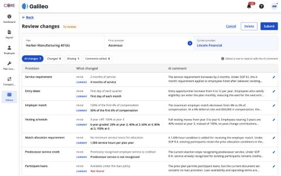
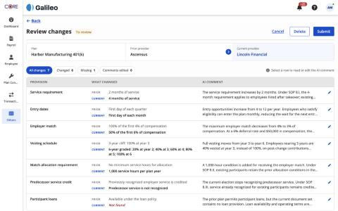
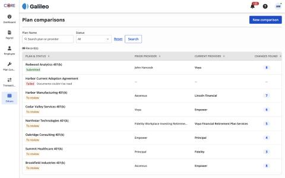
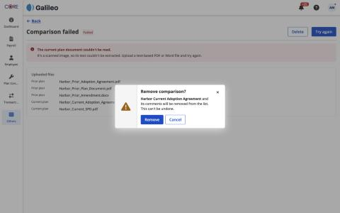
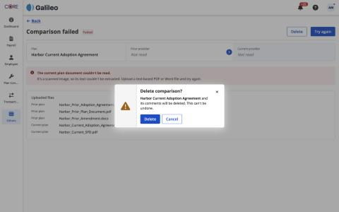
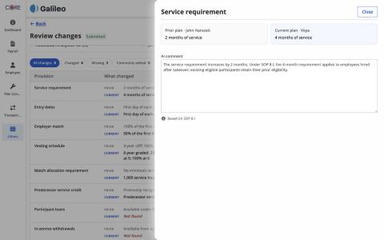
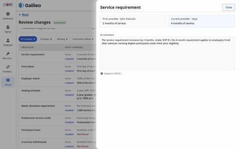

I opened every screen and state at 1440px: Plan comparisons, New comparison, Review (to review and submitted), comment slide-out, Comparison failed, and the Delete modal.
Plan comparisons used small UPPERCASE grey headers; Review changes used large Title Case on a lighter grey. Review now uses the same header style.







| Check | Result |
|---|---|
| Page header: 24px bold title, CTAs top-right, grey divider, sticky | Same on all 4 pages |
| Back link above the title on inner pages | Review, Failed, New comparison |
| CTA order: tertiary, then secondary, then primary | Cancel · Delete · Submit; Cancel · Compare plans; Delete · Try again |
| Button size | Regular everywhere |
| Status badges: To review (amber), Submitted (green), Failed (red) | Same colours in the list and in page titles |
| Modal: kit style, primary first, ✕ close | Delete and Discard modals match |
| Font: Open Sans; icons: Font Awesome | Consistent |